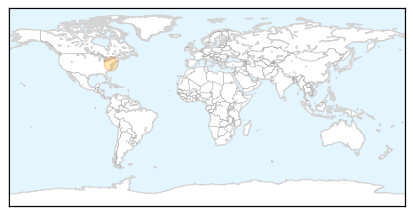
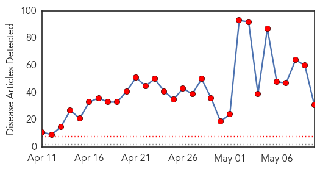
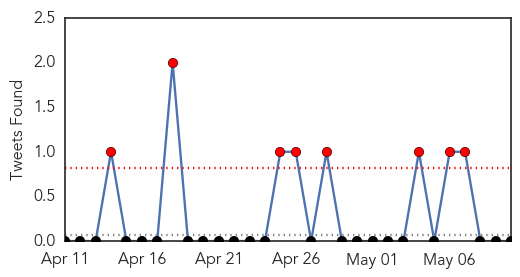
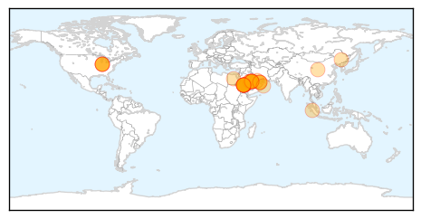
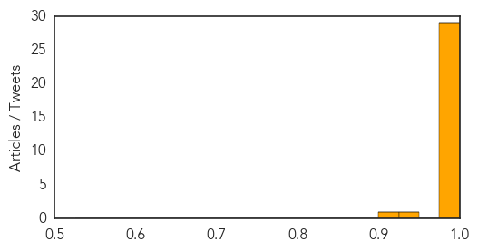

Measles
30-Day Web Trend
30-Day Twitter Trend
0 alerts, 0 warnings

Article Locations
Article Confidences

Top Articles:
Top Tweets:
-
No tweets found for May 10, 2014
MERS
30-Day Web Trend
30 alerts, 0 warnings

30-Day Twitter Trend
8 alerts, 0 warnings

Article Locations
Article Confidences
Top Articles:
- 1.000
- Hospitals on high alert, ready for MERS virusHealthcare
- 1.000
- MERS Patient Released from Indiana Hospital
- 1.000
- First American MERS patient released from Indiana hospital after officials determine he 'poses no threat to the community'
- 0.999
- With MERS concerns rising, WHO warns about some camel products, contact
- 0.999
- 1st American MERS patient 'no threat to community'
- 0.999
- Saudi Arabia reports more MERS deaths
- 0.999
- Ministry takes precautions against coronavirus - Kuwait Times
- 0.997
- Seven new MERS deaths in Saudi Arabia
- 0.997
- 7 new MERS deaths in Saudi Arabia
- 0.997
- Saudi MERS death toll rises to 126
- 0.996
- Saudi Arabia finds another 10 cases of MERS infection
- 0.996
- Middle East Online
- 0.996
- Saudi Arabia finds another 32 MERS cases as disease spreads
- 0.996
- Saudi Arabia finds another 18 MERS cases as disease spreads
- 0.995
- Hospital equips staff, patients, visitors with badges to trace contact with infected patient
- 0.995
- 13 new MERS deaths in Saudi Arabia
- 0.995
- Calif. official: Plans in place as 1st MERS case emerges in U.S.
- 0.995
- Fakeih visits more hospitals as WHO reviews Saudi data
- 0.994
- Travelers to Middle East get cautioned over deadly virus
- 0.994
- 14 New MERS Deaths in Saudi Arabia — Naharnet
- 0.994
- 14 New MERS Deaths in Saudi Arabia — Naharnet
- 0.993
- 13 new MERS deaths in Saudi Arabia
- 0.993
- More suspected-MERS patients in Medan
- 0.993
- 13 new Mers deaths in Saudi Arabia, death toll reaches 139
- 0.993
- MERS patient released from hospital
- 0.993
- 1st American Mers patient released from hospital, 'poses no threat' - Emirates 24
- 0.990
- US MERS patient released from Indiana hospital, ‘fully recovered’ and MERS virus negative
- 0.988
- Second Indonesian found with MERS in Saudi Arabia
- 0.988
- Epidemic control: Preventive measures ordered against coronavirus
- 0.947
- On MERS-CoV: Some Pinoy nurses in Saudi stop working, fear own safety
- 0.916
- Egypt reports new suspected coronavirus infection
Top Tweets:
-
No tweets found for May 10, 2014